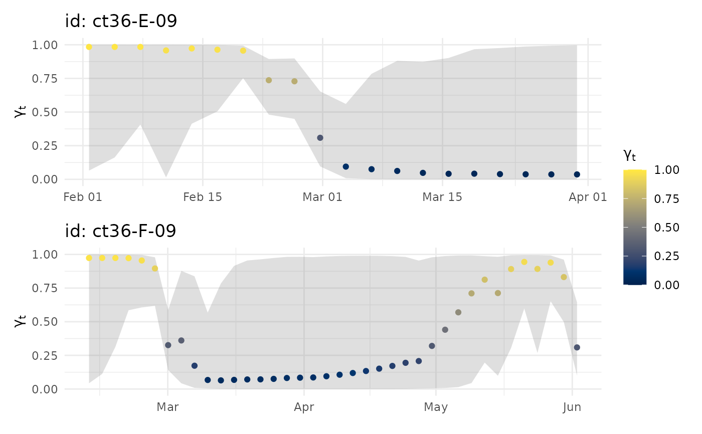

visualize fits from an mpm object
# S3 method for mpm_df
plot(
x,
y = NULL,
se = FALSE,
pages = 0,
ncol = 1,
ask = TRUE,
pal = "Plasma",
rev = FALSE,
...
)a aniMotum mpm fit object with class mpm_df
optional ssm fit object with class ssm_df corresponding to x.
If absent, 1-d plots of gamma_t time series are rendered
otherwise, 2-d track plots with locations coloured by `gamma_t`` are rendered.
logical (default = FALSE); should points be scaled by gamma_t
uncertainty (ignored if y is not supplied)
plots of all individuals on a single page (pages = 1; default) or each individual on a separate page (pages = 0)
number of columns to use for faceting. Default is ncol = 1 but this may be increased for multi-individual objects. Ignored if pages = 0
logical; if TRUE (default) user is asked for input before each plot is rendered. set to FALSE to return ggplot objects
grDevices::hcl.colors palette to use (default: "Plasma"; see grDevices::hcl.pals for options)
reverse colour palette (logical)
additional arguments to be ignored
a ggplot object with either: 1-d time series of gamma_t estimates
(if y not provided), with estimation uncertainty ribbons (95 % CI's);
or 2-d track plots (if y provided) coloured by gamma_t, with smaller points
having greater uncertainty (size is proportional to SE^-2, if se = TRUE).
Plots can be rendered all on a single page (pages = 1) or on separate pages.
# generate a ssm fit object (call is for speed only)
xs <- fit_ssm(sese2, spdf=FALSE, model = "rw", time.step=72, control = ssm_control(verbose = 0))
#>
#>
# fit mpm to ssm fits
xm <- fit_mpm(xs, model = "jmpm")
#> fitting jmpm...
#>
pars: 0 0 0
pars: -0.63038 -0.77416 0.05745
pars: -0.21961 -0.90381 0.95993
pars: 0.1024 -0.34798 0.19353
pars: -0.12912 -0.74761 0.74455
pars: -0.17853 -0.8329 0.86216
pars: -0.23363 -0.801 0.86597
pars: -0.27635 -0.61987 0.76146
pars: -0.40458 -0.79384 0.62587
pars: -0.36412 -0.6719 0.40545
pars: -0.38583 -0.70377 0.60569
pars: -0.43697 -0.67572 0.577
pars: -0.38583 -0.70377 0.60569
# plot 1-D mp timeseries on 1 page
plot(xm, pages = 1)
